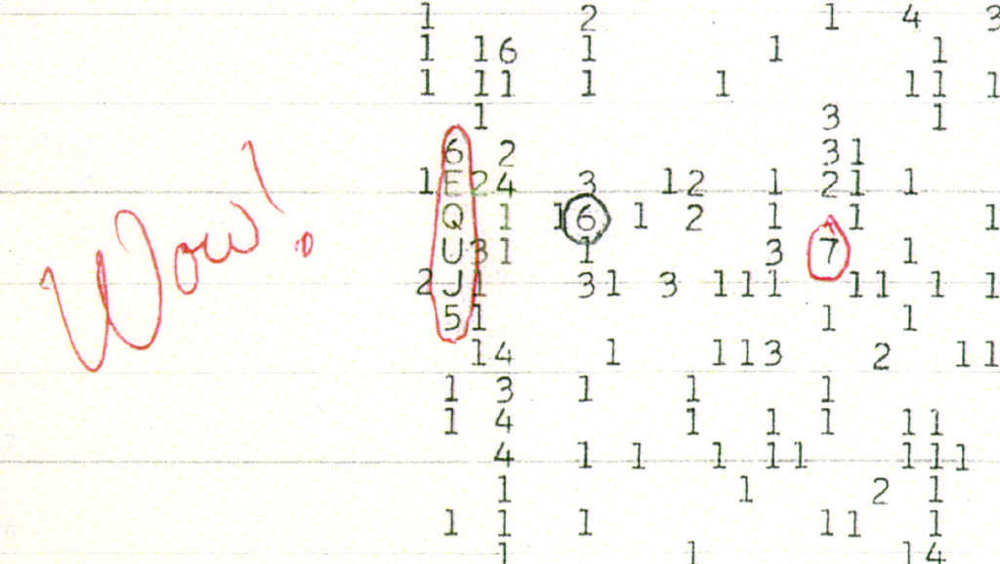

October 05, 2026
The "Wow!" Signal Just Got Bigger — And More Mysterious

Big Ear Radio Observatory printout with Jerry Ehman's annotation (public domain, via Wikimedia Commons)
It's the most famous "almost" in the history of science — and it just got bigger.
On August 15, 1977, Ohio State University's Big Ear radio telescope picked up a 72-second burst of radio waves from deep space. A few days later, astronomer Jerry Ehman spotted the odd sequence 6EQUJ5 in the data printout, circled it, and wrote one word in the margin: "Wow!"
It never happened again.
For nearly five decades that single signal has refused to repeat — and nobody has explained it. The original Big Ear data weren't even numbers in the usual sense: the computer printed six characters encoding how far one narrow frequency channel rose above background noise in successive 12-second samples. Converting that into an actual physical strength required knowing how the 1977 instrument was calibrated.
What the reanalysis found
In 2025, a team led by Abel Méndez of the Planetary Habitability Laboratory at the University of Puerto Rico at Arecibo rebuilt that calibration from recovered Big Ear records. Their findings:
- Stronger: a reconstructed peak flux of at least 256 ± 63 janskys — more than four times the 54-jansky figure most popular accounts quote. (An earlier independent estimate of 212 janskys falls inside the new uncertainty.)
- Sharper location: the uncertainty narrowed to two possible sky boxes, centered at 19h 25m 02s and 19h 27m 55s (declination −26° 57′ ± 20′).
- Shifted frequency: 1420.4556 → 1420.726 MHz, implying a faster-moving source — most consistent with something inside our own Milky Way.
- Interference increasingly unlikely: no Ohio TV transmissions, no satellites, the Moon on the wrong side of the planet, and the Sun in a quiet period. The signal's beam-shaped rise and fall looks like a fixed cosmic source drifting through the beam.
The magnetar-hydrogen hypothesis
The team's leading natural idea, published in a 2024 preprint: a burst of radiation from a magnetar — a neutron star with an extreme magnetic field — struck a cold cloud of neutral hydrogen, triggering a brief maser or superradiant flare that blazed at the hydrogen frequency. If real, it would be an astronomical event never before recorded.
But honesty matters here more than wonder. The mechanism has never been observed in operation. No magnetar outburst has been connected to the 1977 signal. And the team only identified weaker clouds with similar bandwidths — not a smaller version of the full event. A stronger measurement raises the bar every explanation must clear; it does not make an extraterrestrial transmission more likely.
The open question stands
The 2025 Arecibo Wow! II reanalysis remains a preprint, labelled for submission to the Astrophysical Journal. It does not turn one observation into a repeat detection, and it does not identify what produced the signal. What would settle it: another event where the radio signal, the hydrogen cloud, and the high-energy trigger are all observed together.
Until then, the 1977 detection is more precisely described — not identified. And the most famous one-word review in astronomy stands unanswered.
Source: SpaceDaily (Deep Field) — read the original report
← Back to latest stories